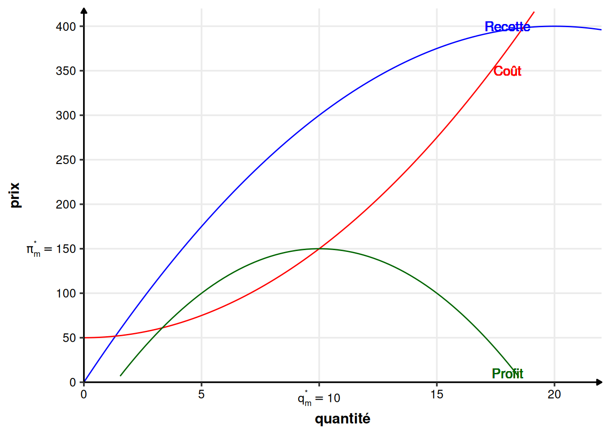
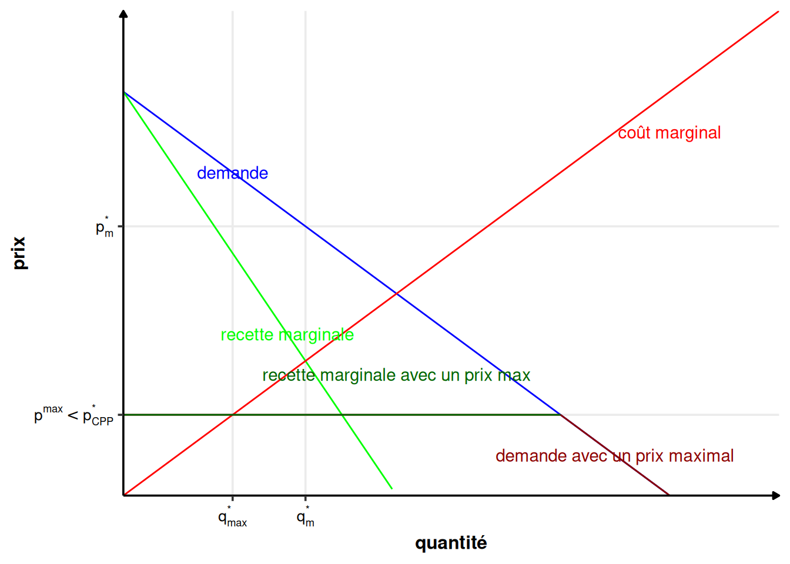
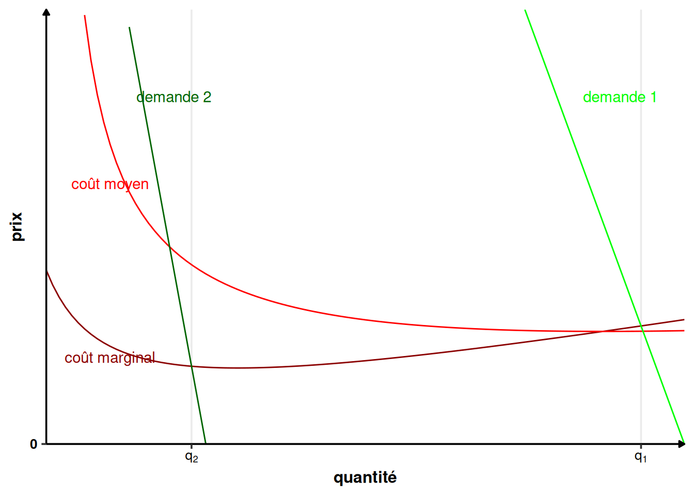

3 Le monopole
Définition 3.1 (Monopole) Un monopole est sur un marché donné l’unique entreprise qui produit le bien.
C’est le cas extrême opposé à la concurrence pure et parfaite, du côté du producteur. Il est intéressant à étudier car il nous renseigne sur les principaux aspects du comportement des entreprises dans les cas intermédiaires.
Il y a de nombreuses raisons qui aboutissent à l’existence de monopoles. Les principales sont :
- Légales, à cause de réglementation particulières. C’est ce qu’on appelle en général des professions réglementées, comme les avocats, les bureaux de tabac, les taxis…
- Légales, à cause des brevets sur une technologie données (industrie pharmaceutique, …) ;
- Historique, le premier arrivé ;
- Monopoles naturels : en présence d’économies d’échelles, produire une quantité donnée revient moins cher avec un seul producteur qu’avec plusieurs. C’est notamment les cas des industries où il faut installer des réseaux (chemins de fer, électricité, téléphone, …). Plus généralement, les industries avec des coûts fixes ou des coûts d’entrées très élevées aboutissent à des formes proches du monopole naturel (sidérurgie, automobile, …) ;
- Exclusivité sur la production de certaines matières premières (cuivre au Chili, terres rares en Chine, …) ;
- Coalitions créant un cartel ;
- …
3.1 Recette et recette marginale
3.1.1 Définition
L’avantage du monopole sur des entreprises en concurrence pure et parfaite est qu’il connaît tout le marché. Il peut influencer le prix sur le marché, en modifiant son prix de vente ou la quantité vendue. Cela permet au monopole de percevoir la vraie courbe de demande agrégée et non plus une courbe de demande avec une élasticité infinie. Le choix de la quantité qu’il met sur le marché modifie le prix auquel il pourra vendre sa production et il le sait. Il va choisir un des paramètres du couple \((q^*, p^*)\) du prix et de la quantité sur le marché. L’autre en découlera, à travers la demande inverse \(P(q)\) ou la demande \(Q(p)\). Autrement dit, s’il choisit \(q^*\), le prix sur le marché \(p^*\) sera déterminé par le demande inverse (\(p^*=P(q^*)\)). Si, au contraire, il choisit \(p^*\), la quantité échangée \(q^*\) sera déterminée par la demande (\(q^*=Q(p^*)\)).
En CPP, la recette totale du producteur individuel était \(R(q) = q\cdot P(q^*)\), où \(q\) est sa production individuel, \(q^*\) la quantité d’équilibre sur le marché (résultat de la production de toutes les entreprises présentes sur le marché) et \(P(q^*)=p^*\) est le prix d’équilibre.
En monopole, le prix dépend de la production du monopole (ou l’inverse, peu importe). La recette totale du monopole s’écrit donc : \[ R(q) = q\cdot P(q) = Q(p)\cdot p \]
3.1.2 Recette marginale et courbe de demande
Comme la demande est décroissante (l’élasticité prix de la demande est négative \(\varepsilon_{q/p} <0\)), \(P(q)\) et \(q\) ont une relation inverse. Autrement dit, si \(q\) augmente, alors \(p\) baisse et inversement. On peut constater sur la figure 3.1 que deux phénomènes influencent la variation de la recette totale quand on augmente la production d’une unité (passage de \(q\) à \(q+\Delta q\) unités vendues). Le gain lié à la vente de \(\Delta q\) unités supplémentaires. La perte due à la baisse du prix de vente total de toutes les unités vendues (passage de \(P(q)\) à un prix inférieur \(P(q+\Delta q)\)).
Quel est le paramètre important de la courbe de demande qui détermine si le revenu \(R\) augmente ou diminue (c’est-à-dire si la recette marginale \(R_m\) est positive ou négative) ?
\[\begin{align*} R(q) & = qP(q)\\ R_m(q)& = R'(q) \\ & = \left(qP(q)\right)' \\ & = P(q) + qP'(q) \\ & = P(q)\left(1 + \frac{q}{P(q)}P'(q) \right)\\ & = P(q)\left(1 + \frac{1}{\varepsilon_{q/p}(q)}\right) \end{align*}\]
Remarque (Élasticité prix de la demande). L’élasticité prix de la demande \(\varepsilon_{q/p}\) s’écrit : \[\varepsilon_{q/p}(p)=\frac{p}{D(p)}D'(p) <0\] Où \(D\) est la fonction de demande. Elle est toujours négative, car la demande diminue quand le prix augmente. On peut la réécrire à l’aide de la fonction de demande inverse \(P\). Comme \(D\) et \(P\) sont les fonctions réciproques l’une de l’autre, on a \(D(P(q)) = q\). En dérivant à gauche et à droite et en utilisant la formule de la dérivation composée, on obtient : \[P'(q)D'(P(q)) = 1\] On obtient donc : \[P'(q)=\frac{1}{D'(p)}\] Et l’élasticité prix de la demande peut aussi s’écrire : \[\varepsilon_{q/p}(q)=\frac{P(q)}{q}\frac{1}{P'(q)}\]
On peut donc écrire : \[ R_m(q) = P(q)\left(1 - \frac{1}{|\varepsilon_{q/p}(q)|}\right) \tag{3.1}\]
Proposition 3.1 (Élasticité prix de la demande et recette marginale) De l’équation 3.1, on observe que le signe de la recette marginale \(R_m\) dépend de l’élasticité prix de la demande \(|\varepsilon_{q/p}(q)|\).
- Si la demande est élastique (\(|\varepsilon_{q/p}(q)|>1\)), alors \(R_m(q)>0\), donc si la quantité augmente, le revenu augmente.
- Si la demande est inélastique (\(|\varepsilon_{q/p}(q)|<1\)), alors \(R_m(q)<0\), donc si la quantité augmente, le revenu diminue.
Une représentation graphique de l’allure générale est donnée dans la figure 3.2.

3.1.3 Représentation graphique
La courbe de recette marginale est toujours située en-dessous de la courbe de demande : \[ R_m(q) = P(q) + qP'(q) < P(q) \] car \(P'(q)\) est négative (la demande inverse est décroissante).
3.1.3.1 Exemple avec une courbe de demande linéaire
Prenons maintenant l’exemple d’une courbe de demande inverse linéaire quelconque \(P(q) = a-bq\) (\(a\) et \(b\) sont des valeurs numériques quelconques). On obtient alors \(R_m(q) = a-2bq\) (et \(R(q) = aq-bq^2\)).
Dans le cas linéaire, le revenu marginal est une droite de pente deux fois plus élevée que la demande, et ayant la même ordonnée à l’origine. La recette marginale divise en deux tout segment horizontal entre l’axe des ordonnées et la courbe de demande inverse. On peut ainsi représenter graphiquement, comme dans la figure 3.3 la demande, la recette marginale et la recette totale.

La recette maximale est atteinte lorsque la valeur absolue de l’élasticité prix de la demande est égale à 1 (\(|\varepsilon_{q/p}(q)|=1\)).
Sur la figure 3.4, on voit qu’il est possible de calculer la recette totale de deux manières :
- En utilisant l’aire du trapèze vert (intégrale de la recette marginale entre 0 et la quantité échangée \(q^*\)) ;
- En utilisant l’aire du rectangle rouge (\(\pi=p^* q^*\)).
3.2 Décision de production du monopole
3.2.1 Maximisation du profit
Comme dans le cas de la CPP, on suppose que le monopole cherche à maximiser son profit \(\pi(q)=R(q)-C(q)\), où \(C(q)\) est la fonction de coût (total) du monopole.
Il y a 2 conditions d’optimalités, les conditions de premier ordre (la dérivée du profit à l’optimum est nulle : \(\pi'(q^*)=0\)) et de second ordre (la dérivée seconde du profit à l’optimum est strictement négative \(\pi''(q^*)<0\)), ainsi qu’une contrainte, que le profit à l’optimum soit positif (\(\pi(q^*)>0\)).
La condition de premier ordre s’exprime ainsi : \[ \begin{array}{rcl} \pi'(q^*) &=&0\\ \Leftrightarrow R'(q^*) - C'(q^*) &=& 0\\ \Leftrightarrow R_m(q^*) &=&C_m(q^*) \end{array} \] À l’optimum, le monopole égalise le coût marginal et le revenu marginal.
La condition du second ordre s’exprime ainsi : \[ \begin{array}{rcl} \pi''(q^*) &<&0\\ \Leftrightarrow R_m'(q^*) - C_m'(q^*) &<& 0\\ \Leftrightarrow R_m'(q^*) &<& C_m'(q^*) \end{array} \]
La dérivée de la recette marginale doit être inférieure à la dérivée du coût marginal. Autrement dit, la recette marginale doit croître moins vite que le coût marginal. Cette condition est en particulier vérifiée si la recette marginale est décroissante et le coût marginal croissant.
Finalement, il faut vérifier que le profit à l’optimum est positif (\(\pi(q^*)>0\)). Dans le cas contraire, le marché n’existerait tout simplement pas, car le monopole ne voudrait pas produire le bien.
Théorème 3.1 (Optimum du monopole) À l’optimum, le monopole égalise le coût marginal et le revenu marginal. Ce n’est un maximum que si la dérivée de la recette marginale est inférieure à la dérivée du coût marginal et que le profit est positif. \[ R_m(q^*)=C_m(q^*) \tag{3.2}\]
\[ R_m'(q^*) <C_m'(q^*) \tag{3.3}\] \[ \pi(q^*)>0 \tag{3.4}\]
La figure 3.5 donne l’intuition graphique de l’égalité entre le coût marginal et la recette marginale. Si le monopole produit plus que \(q_m^*\), alors chaque unité produite en plus lui coûte plus chère qu’elle ne lui rapporte, car le coût marginal est supérieur à la recette marginale. A l’inverse, s’il produit moins, produire des unités en plus lui rapporterait plus que cela ne lui coûte, car le coût marginal est inférieur à la recette marginale.

Le prix est lu et obtenu sur la courbe de demande.
Exemple 3.1 (Maximisation du monopole) Prenons un monopole avec une fonction de coût \(C(q)=50+q^2\). Le monopole fait face à une demande inverse \(P(q) = 40-q\).
Le coût marginal est : \[ C_m(q) = C'(q)=2q \]
La recette totale est : \[ R(q) = qP(q) = q(40-q) = 40q-q^2 \] La recette marginale est donc : \[ R_m(q) = R'(q) = 40 - 2q \] Le profit vaut : \[ \pi(q) = R(q)-C(q) \] Conformément à l’équation 3.2, il est maximal lorsque : \[ \begin{array}{rcl} R_m(q^*) &=&C_m(q^*)\\ \Leftrightarrow 40 -2q &= &2q\\ \Leftrightarrow q^*&=&10 \end{array} \] La condition de second ordre de l’équation 3.3 est bien vérifiée, car \(-2<2\).
Le prix de vente vaut : \[P(q^*) = P(10) = 40-10 = 30\] La recette vaut 300, le coût 150. On a donc un profit de 150, qui est bien positif (condition de l’équation 3.4).


3.2.2 Propriétés de la solution du monopole
On avait dans l’équation 3.1 : \[ R_m(q) = P(q)\left(1 - \frac{1}{|\varepsilon_{q/p}(q)|}\right) \] Comme à l’optimum, d’après l’équation 3.2, on doit avoir \(R_m(q^*)=C_m(q^*)\), on a : \[ R_m(q^*) = P(q^*)\left(1 - \frac{1}{|\varepsilon_{q/p}(q^*)|}\right) = C_m(q^*) \tag{3.5}\]
On observe ici un lien avec la solution en CPP. En effet, en CPP, l’élasticité de la demande au prix est perçue comme infinie, on aura donc bien \(P(q^*) = C_m(q^*)\), la solution obtenue en CPP. Dès lors que l’élasticité de la demande au prix n’est plus infinie en revanche, on obtient : \[ P(q^*)=\frac{C_m(q^*)}{1 - \frac{1}{\left|\varepsilon_{q/p}(q^*)\right|}} > C_m(q^*) \]
Question : Dans quelle zone d’élasticité le monopole opère-t-il ?
Si \(\left|\varepsilon_{q/p}(q^*)\right|<1\), c’est-à-dire que si la demande est inélastique, alors \(1 - \frac{1}{\left|\varepsilon_{q/p}(q^*)\right|} <0\), ce qui implique que la recette marginale \(R_m\) est négative et donc impossible à égaliser avec le coût marginal \(C_m\).
On peut voir la réponse d’une autre façon. Si la pente est inélastique, alors le revenu \(R\) augmente quand la quantité \(q\) baisse. Le coût total \(C\) baisse aussi quand la quantité baisse. Le monopole aurait donc tout intérêt à réduire sa production lorsque la demande est inélastique.
Corollaire 3.1 (Élasticité de la demande à l’optimum) Le monopole opère donc nécessairement dans la zone élastique de la courbe de demande : \(\left|\varepsilon_{q/p}(q^*)\right|>1\) .
3.2.3 Indice de pouvoir du monopole
La capacité du monopole à vendre à un prix supérieur au coût marginal dépend de la plus ou moins grande élasticité de la demande au prix. Cela permet de construire un indice du pouvoir de monopole à partir de l’élasticité du prix à la demande à l’équilibre. On a, d’après l’équation 3.5 : \[ R_m(q^*) = P(q^*)\left(1 - \frac{1}{|\varepsilon_{q/p}(q^*)|}\right) = C_m(q^*) \] On en déduit :
\[ \begin{array}{rl} & C_m(q^*) = P(q^*) - \frac{P(q^*)}{|\varepsilon_{q/p}(q^*)|}\\ \Leftrightarrow & P(q^*) - C_m(q^*) = \frac{P(q^*)}{|\varepsilon_{q/p}(q^*)|} \end{array} \]
Définition 3.2 (Indice de Lerner) On définit l’indice de Lerner \(L\) par : \[ L=\frac{1}{|\varepsilon_{q/p}(q^*)|} = \frac{P(q^*) - C_m(q^*)}{P(q^*)} \tag{3.6}\] L’indice de Lerner est donc inversement proportionnel à l’élasticité prix de la demande. Il est aussi égal à la capacité du monopole à vendre au-dessus de son coût marginal, en pourcentage du prix total.
On peut construire à partir de l’équation précédente le markup pricing.
Définition 3.3 (Markup pricing) \[ P(q^*) =\frac{|\varepsilon_{q/p}(q^*)|}{|\varepsilon_{q/p}(q^*)|-1} C_m(q^*) \]
3.2.4 Variation de la demande
Les décisions de production du monopole et la fixation de son prix dépendent de la demande à laquelle il fait face et du coût marginal. Le monopole n’a pas de courbe d’offre au sens où il n’y a pas de relation univoque entre prix et quantité produite, à la différence des producteurs en CPP. En monopole, si la demande change, le monopole s’adapte, soit en changeant sa production, mais pas son prix (figure 3.9), ou l’inverse (figure 3.8).


En CPP, un changement de demande, si elle implique une changement du prix d’équilibre, entraîne forcément un changement dans la quantité produite par un producteur individuel.
3.2.5 L’inefficience du monopole
La production du monopole est inférieure à la production en CPP et le prix est supérieur au prix de CPP.

Cela implique que le surplus du producteur (son profit) est plus élevé en monopole qu’en CPP, et que le surplus des consommateur est plus faible. Il y a globalement une perte sèche de surplus total. Le monopole est inefficace au sens de Pareto. Il existe des consommateurs prêt à acheter à un prix supérieur au coût marginal (dans le triangle de la perte sèche). Il est donc possible d’avoir une amélioration parétienne qui améliore à la fois la situation des consommateurs et du monopole. Il suffirait pour cela que le monopole produise une unité supplémentaire du bien à un prix supérieur au coût marginal, sans rien changer d’autre pour obtenir cette amélioration.
3.3 Régulation du monopole
Cette partie va traiter de la manière dont un gouvernement peut inciter ou contraindre un monopole à modifier son comportement. Un premier type de régulation est par la taxation ou la subvention du monopole. Un second type de régulation est l’imposition d’un prix maximal.
3.3.1 Taxes et subventions
3.3.1.1 Taxe unitaire
Définition 3.4 (Taxe unitaire) Une taxe unitaire \(t\) est une taxe par unité de bien produite.
Un gouvernement impose une taxe de \(t\) unités monétaire par unité de bien produite. Le profit du monopole se réécrit alors :
\[ \pi(q) = R(q) - C(q) -tq \] La condition de première ordre de la maximisation du producteur de l’équation 3.2 devient alors : \[ \begin{array}{rl} &(R(q)-C(q) -tq)'(q^*) = 0\\ \Leftrightarrow & R_m(q^*)-C_m(q*) -t = 0\\ \Leftrightarrow & R_m(q^*) = C_m(q^*) + t \end{array} \] Le problème est exactement le même que précédemment, en intégrant la taxe dans le coût marginal. Pour le monopole, c’est comme si l’État ajoutait un coût \(t\) à chaque unité produite. C’est effectivement ce que l’État fait si on considère le coût de production au sens large.

Cela entraîne une diminution de la quantité produite et une augmentation du prix. Le surplus des consommateurs baisse, ainsi que celui du monopole.
Une vue alternative à l’augmentation du coût marginal est de considérer que la taxe diminue la recette marginale de \(t\) : \[ R_m(q^*) -t = C_m(q^*) \]

Si le gouvernement utilise une taxe négative (= une subvention), alors le gouvernement peut augmenter la production et de diminuer le prix.
3.3.1.2 Taxe forfaitaire
Définition 3.5 (Taxe forfaitaire) Une taxe forfaitaire est une taxe \(T\) imposée au monopole directement sur son profit, indépendamment de tout (prix ou quantité produite).
Avec une taxe forfaitaire, l’état prélève un montant \(T\) indépendant de la quantité produite sur le profit du producteur. \[ \pi(q) = R(q) - C(q) -T \] La condition du premier ordre de l’équation 3.2 devient alors : \[ \begin{array}{rl} & (R(q)-C(q) -T)'(q^*) = 0\\ \Leftrightarrow & R_m(q^*)-C_m(q*) = 0\\ \Leftrightarrow & R_m(q^*) = C_m(q^*) \end{array} \] On retrouve exactement la même condition d’optimalité qu’en l’absence de taxe. Si elle n’est pas trop élevée, une taxe forfaitaire n’a aucune influence sur la quantité produite et le prix. Si la taxe forfaitaire est très élevée, supérieure au profit \(R(q^*) - C(q^*) <T\), le monopole préfère ne rien produire et le surplus social est nul.
On peut donc envisager de combiner une subvention unitaire au monopole combinée à une taxe forfaitaire pour augmenter le surplus total.
3.3.1.3 Impôt sur les bénéfices (profit)
Un autre type d’imposition possible est l’impôt sur les bénéfices.
Définition 3.6 (Impôt sur les bénéfices) L’impôt sur les bénéfices consiste à taxer le profit à un taux \(t\). On impose au monopole de payer un pourcentage de ses profits en impôts.
Au lieu de taxer chaque unité produite, on taxe le niveau de profit à un taux \(t\). Le profit s’écrit alors : \[ \pi(q) = R(q) - C(q) -t(R(q) - C(q)) = (1-t)(R(q) - C(q)) \] La condition du premier ordre de l’équation 3.2 devient alors : \[ \begin{array}{rl} &((1-t)(R(q)-C(q)))'(q^*) = 0\\ \Leftrightarrow & (1-t)(R_m(q^*)-C_m(q^*)) = 0\\ \Leftrightarrow & R_m(q^*) = C_m(q^*) \end{array} \]
Comme pour la taxe forfaitaire, le comportement du monopole n’est pas modifié par un impôt sur les bénéfices. On peut donc aussi envisager une subvention à la production et une taxe proportionnelle sur le profit.
3.3.2 Prix maximal
L’État fixe un prix maximal \(p^{max}\) au dessus duquel le monopole ne peut pas vendre. Il modifie ainsi la demande perçue par le producteur.


Si le prix maximum est inférieur au prix de concurrence pure et parfaite, les quantités produites peuvent devenir sous-optimales. Le gouvernement peux maximiser le surplus social en prenant le prix concurrentiel comme prix maximum.
Rappel : En CPP, on obtient le prix à l’aide de la courbe de coût marginal. L’équilibre a lieu quand le coût marginal et la demande se croisent.
Avec un prix maximum égal au prix de concurrence pure et parfaite, le revenu marginal coupe la courbe de coût marginal au point d’équilibre de la concurrence pure et parfaite. Le prix maximal génère alors exactement la situation de CPP. On est donc dans une situation optimale au sens de Pareto.
Proposition 3.2 (Évolution des quantités produites avec un prix maximal) Trois situations sont possibles avec un prix maximal :
- S’il est supérieur au prix de monopole (\(p^{max}>p^*_m\)), alors le prix maximal n’a aucune incidence.
- S’il est entre le prix de monopole et le prix de concurrence pure et parfaite (\(p^*_{CPP}\leq p^{max}\leq p^*_m\)), alors la quantité produite augmente quand le prix maximal diminue.
- S’il est inférieur au prix de CPP et donc de monopole (\(p^*_{CPP}> p^{max}\)), alors la quantité produite diminue quand le prix maximal augmente.
3.4 Le monopole naturel
Une situation de monopole est dite naturelle si le monopole émerge à cause d’une structure particulière de la technologie de production et des coûts, plutôt qu’à cause d’une disposition légale.
Définition 3.7 (Rendements d’échelles) Les rendements d’échelles sont croissants lorsque la technologie de production \(f\) est telle que : \[ f(\lambda z_1, \lambda z_2, ...\lambda z_n) > \lambda f(z_1,z_2, ..., z_n) \] où les \(z_i\) sont les facteurs de productions. En mots : une entreprise utilisant \(\lambda\) fois plus de facteurs de productions qu’une petite entreprise produit plus que \(\lambda\) petites entreprises réunies.
Une conséquence des rendements d’échelle croissants est que le coût moyen est décroissant : \[ C_M(f(\lambda z)) =\frac{\lambda z\cdot w_z}{f(\lambda z)} < C_M(\lambda f(z)) = \frac{\lambda z\cdot w_z}{\lambda f(z)} \] car \(f(\lambda z)>\lambda f(z)\). Cela signifie qu’une seule entreprise qui produit \(f(\lambda z)\) est plus efficace que \(\lambda\) entreprises qui produisent \(\lambda f(z)\). Il y a ici des économies d’échelle.
Définition 3.8 (Économie d’échelle) Il y a des économies d’échelle quand une unité de bien produite en plus revient moins chère que l’unité précédente. Cela signifie que le coût moyen baisse quand le producteur produit plus d’unités.
Définition 3.9 (Monopole naturel) Un monopole naturel émerge en présence d’économies d’échelles dans la zone de production optimale.
En général, les économies d’échelles proviennent de coûts fixes élevés. Par exemple, lorsqu’il faut investir dans un réseau (ferrés, téléphone, électricité, etc).
Il y a presque toujours une zone où le coût moyen est décroissant, mais elle est rarement très étendue. Dans la figure 3.15, la demande inverse 1 coupe la courbe de coût marginal à un endroit où les économies d’échelle sont décroissantes. La demande 2, en revanche, la coupe à un endroit où les économies d’échelle sont croissantes.

Remarque (Lien entre coût marginal et coût moyen en monopole naturel.). Lorsque le coût moyen est décroissant, c’est que le coût marginal est inférieur au coût moyen. \[ C_M(q) = \frac{C(q)}{q} \] \[ C_M'(q) =\frac{C'(q)q-C(q)}{q^2} = \frac{C_m(q)-C_M(q)}{q} \] Or \(C_M'(q)<0\), comme le coût marginal est décroissant. On en déduit donc que : \[ C_m(q)-C_M(q)< 0 \Leftrightarrow C_m(q)<C_M(q) \]
Remarque (Rendements d’échelle et économies d’échelle). Il ne faut pas confondre les rendements d’échelle, qui mettent en relation les quantités de facteurs de productions et les quantités de biens produites et économies d’échelle, qui est une notion lié au coût de production des unités de biens produites.
3.4.1 Régulation du monopole naturel
Dans le cas d’un monopole naturel, le coût marginal est inférieur au coût moyen à l’optimum. Une régulation qui maximise le surplus total est une régulation qui fait en sorte que la quantité produite est celle produite en concurrence pure et parfaite. Dans le cadre du monopole naturel, cela signifie que le coût moyen sera supérieur au coût marginal et donc au prix d’échange de la concurrence pure et parfaite, comme illustré dans la figure 3.16.

Si on impose une tarification au coût marginal, à l’aide d’un prix maximal, par exemple, alors le monopole fait des pertes, car le prix est inférieur au coût moyen. La régulation “optimale” généralement utilisée impose un prix au coût moyen et une obligation de satisfaire toute la demande. Le monopole fait alors un profit nul.
Une solution alternative est un prix égal au coût marginal assorti de subventions pour couvrir les pertes.
3.5 Le monopole discriminant
Un monopole discriminant pratique un prix différent pour chaque (groupe de) consommateurs. Pour cela, il doit pouvoir identifier l’appartenance de chaque consommateur à un groupe et les marchés entre les consommateurs doivent être hermétiques. En particulier, il ne faut pas qu’un consommateur puisse revendre son unité de bien à un autre consommateur.
Il existe 3 types de discriminations par les prix, les discrimination du premier, deuxième et troisième degrés. On ne traitera que les discriminations du premier et troisième degrés dans ce cours.
3.5.1 Discrimination au premier degré (discrimination parfaite)
Dans une discrimination parfaite, le monopole connaît la valorisation (prix de réserve) de chaque individu et lui fait payer le prix maximum qu’il est prêt à payer (son prix de réserve donc). Le consommateur ne retient alors aucun surplus, la totalité du surplus est capturé par le producteur.
Question : Quel va être le niveau de production du monopole ?
Comme le monopole fait payer chaque unité à la valorisation du consommateur, la première unité est vendue au prix P(1), la deuxième au prix P(2), etc. La recette totale est donc : \[ R(q) = \int_0^q P(x) dx \] Notons le coût total \(C(q)\). Le profit est : \[ \pi(q) = R(q) - C(q) = \int_0^q P(x) dx -C(q) \] La condition du premier ordre s’écrit donc : \[ \begin{array}{rl} &\frac{d\pi(q^*)}{dq} = 0\\ \Leftrightarrow & \frac{d\int_0^{q^*} P(x) dx -C(q^*)}{dq} = 0\\ \Leftrightarrow & P(q^*) - C_m(q^*) = 0\\ \Leftrightarrow & P(q^*) = C_m(q^*) \end{array} \] La recette marginale est ici confondue avec la courbe de demande. L’optimum se trouve donc au point où la courbe de coût marginal coupe la courbe de demande (inverse). C’est la même condition qu’en CPP. Le monopole parfaitement discriminant produit donc la quantité de concurrence pure et parfaite. Le prix de la dernière unité vendue par le monopole est égal au prix de la concurrence pure et parfaite, même si les prix des autres unités vendues sont supérieurs au prix de la CPP.
La situation de discrimination parfaite est un optimum de Pareto. En effet, le surplus social est maximal (mais capturé entièrement par le monopole).
En pratique, il est très difficile de faire de la discrimination parfaite. Les entreprises essaient de s’en approcher le plus possible.
Exemple 3.2 (Exemple de discrimination parfaite) Lors d’une vente de bons du trésors des Etats-Unis, chaque ménage intéressé soumettait une offre (prix, quantité) au gouvernement. Le gouvernement triait les offres par ordre décroissant de prix et les satisfait jusqu’à épuisement des bons à vendre.
3.5.2 Discrimination du deuxième degré
Définition 3.10 (Discrimination du deuxième degré) La discrimination du deuxième degré a lieu lorsque les prix de ventes dépendent des quantités achetées.
Par exemple, si les 10 premières unités vendues le sont à 5€ et les suivantes à 2€. Les prix de vente sont nécessairement décroissants avec la quantité vendue.

Le monopole ajuste les quantités seuils afin de maximiser son profit. Il y a un nombre fini de seuils de dégressivité. Plus il y a de seuils, plus on s’approche d’un situation de discrimination parfaite.
3.5.3 Discrimination du troisième degré
Il s’agit de faire payer un prix différent à chaque groupe de consommateur en fonction des caractéristiques de leurs fonctions de demande. Tous les membres d’un groupe paient le même prix, contrairement à la discrimination au premier degré. Les groupes sont en général caractérisés par des propensions à payer différentes. Il s’agit d’une segmentation des consommateurs.
Exemple 3.3 (Discrimination au troisième degré) Les tarifs jeunes de la SNCF, les tarifs familles. Il est important de pouvoir identifier les groupes.
Question : Comment répartir la production entre les différents groupes ?
- Quelle production totale ?
- Quelle répartition ?
Méthode : On résout d’abord 2 en supposant que 1 est déjà résolu. On obtient alors la répartition en fonction de la production totale. Puis ou résout 1 à l’aide de la solution de 2.
On modélise le problème de la manière suivante :
- 2 groupes A et B ;
- Avec des fonctions de demande inverses \(P_A(q_A)\) et \(P_B(q_B)\) ;
- Une quantité \(q\) totale a été produite, qu’il faut répartir entre les 2 groupes : \(q=q_A+q_B\).
Le problème du monopole s’écrit : \[ \max_{q_A, q_B} \pi(q_A, q_B) = q_AP_A(q_A) + q_BP_B(q_B) -C(q) \] La quantité totale \(q\) est fixée, donc le coût total l’est aussi et peut être supprimé du problème de maximisation. On cherche donc juste à maximiser la recette totale : \[ \max_{q_A, q_B} q_AP_A(q_A) + q_BP_B(q_B) \] Avec \(q=q_A+q_B\), donc \(q_B=q-q_A\), le problème devient : \[ \begin{array}{rl} &\max_{q_A, 0\leq q_A\leq q} q_AP_A(q_A) + (q-q_A)P_B(q-q_A) \\ \Leftrightarrow &\max_{q_A, 0\leq q_A\leq q} R_A(q_A) + R_B(q-q_A) \end{array} \] La condition du premier ordre s’écrit : \[ \begin{array}{rl} &\frac{dR_A(q_A) + R_B(q-q_A) }{dq_A} = 0\\ \Leftrightarrow & R_{mA}(q_A) - R_{mB}(q-q_A) = 0\\ \Leftrightarrow & R_{mA}(q_A) = R_{mB}(q_B) \end{array} \tag{3.7}\] L’équation 3.7 nous dit que le monopole réparti la quantité totale produite de manière à égaliser les recettes marginales entre les deux groupes.
Intuitivement, si la recette marginale issue du groupe A est supérieure à celle issue du groupe B (\(R_{mA}(q_A) > R_{mB}(q_B)\)), alors en diminuant la quantité \(q_B\) dans le groupe B et en la transférant au groupe A, le monopole perd \(R_{mB}(q_B)\) et gagne \(R_{mA}(q_A)\), donc la recette totale augmente et le profit aussi. Inversement dans le cas opposé. Il n’est donc pas intéressant de transférer la production d’un groupe vers un autre lorsque \(R_{mA}(q_A) = R_{mB}(q_B)\) (et seulement dans ce cas).
Maintenant que la répartition est résolue, il faut trouver la quantité totale produite. Le problème devient maintenant : \[ \max_{q_A, q_B} \pi(q_A, q_B) = q_AP_A(q_A) + q_BP_B(q_B) -C(q_A+q_B) \] La condition du premier ordre s’obtient maintenant en dérivant suivant \(q_A\) et \(q_B\) séparément : \[ \begin{array}{rcl} \frac{\partial\pi(q_A, q_B)}{\partial q_A} = 0&\Leftrightarrow& R_{mA}(q_A^*) = C_m(q_A^*+q_B^*)\\ \frac{\partial\pi(q_A, q_B)}{\partial q_B} = 0&\Leftrightarrow& R_{mB}(q_B^*) = C_m(q_A^*+q_B^*)\\ \end{array} \] Le monopole doit faire en sorte que le coût marginal de sa production totale soit égale à la recette marginale sur chacun des marchés.
Intuition : Le monopole doit égaliser la recette marginale sur les deux marchés. Or le coût marginal dépend de la quantité totale produite, pas de la répartition entre les marchés. Si on est dans la situation telle que \(C_m(q)<R_{mA}(q_A)\), alors il y a la possibilité de faire du profit sur le marché A (et le marché B par conséquent). Inversement, si \(C_m(q)>R_{mA}(q_A)\), alors le monopole fait des pertes.
Remarque. On utilise bien \(C_m(q_A+q_B)\) et non \(C_m(q_A)\) ou \(C_m(q_B)\) car c’est bien la variation du coût total lorsqu’on augmente “un peu” \(q_A\) et \(q_B\) reste fixe.
D’après l’équation 3.1, on peut écrire : \[ \begin{array}{crcl} &R_{mA}(q_A^*) &=& R_{mB}(q_B^*)\\ \Leftrightarrow & P_A(q_A^*)\left(1-\frac{1}{\left|\varepsilon_{q/p_A}(q^*_A)\right|}\right) & = & P_B(q_B^*)\left(1-\frac{1}{\left|\varepsilon_{q/p_B}(q_B^*)\right|}\right) \end{array} \] Sans perte de généralité, on peut supposer que \(P_A(q_A^*)> P_B(q_B^*)\). On obtient alors que : \[ 1-\frac{1}{\left|\varepsilon_{q/p_A}(q_A^*)\right|} <1-\frac{1}{\left|\varepsilon_{q/p_B}(q_B^*)\right|} \] Autrement dit \[ \left|\varepsilon_{q/p_B}(q_B^*)\right|>\left|\varepsilon_{q/p_A}(q^*_A)\right| \] Le prix est donc plus faible pour le groupe où l’élasticité prix de la demande est plus élevée. Le prix est plus élevé pour le groupe avec l’élasticité la plus faible, les moins réactifs au prix.
Exemple 3.4 (Tarifs professionnels) Les tarifs “professionnels” dans les transports (avion, train, etc). Les professionnels sont moins sensibles au prix car leurs dates de voyage sont moins flexibles que celles des particuliers. Leurs élasticités-prix sont donc plus faibles et leurs prix plus élevés.
Des fonctions de demande inverse différentes associées à des élasticités-prix de la demande différente aboutissent à des prix différents.